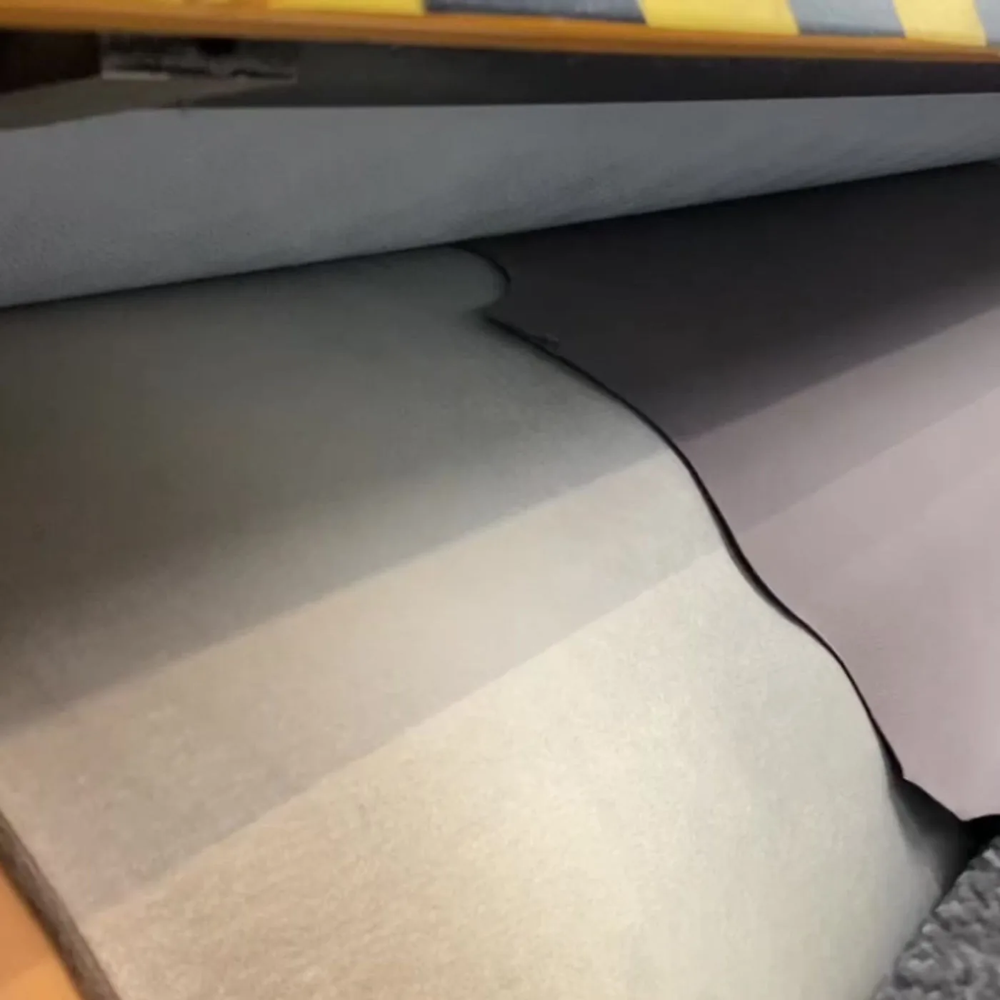

Type 01 — Wool Felts
Natural Fiber
Wool Felts
For Delicate & Luxury Leathers
Our premium Merino wool felts deliver the softest, most natural surface finish for fine and delicate leathers. Long Merino fibers guarantee no texture marks on the leather surface, making them the ideal choice for high-end nappa and nubuck production.
| Fiber | 100% Merino Wool or Wool Blends |
| Finish | Ultra-smooth, no fiber impression |
| Best for | Delicate, thin, and luxury leathers |
| Density | High / Medium available |
| Thickness | Custom to machine specs |
| Compatible machines | Mostardini, RotoPress, Bergi, Nanopress |